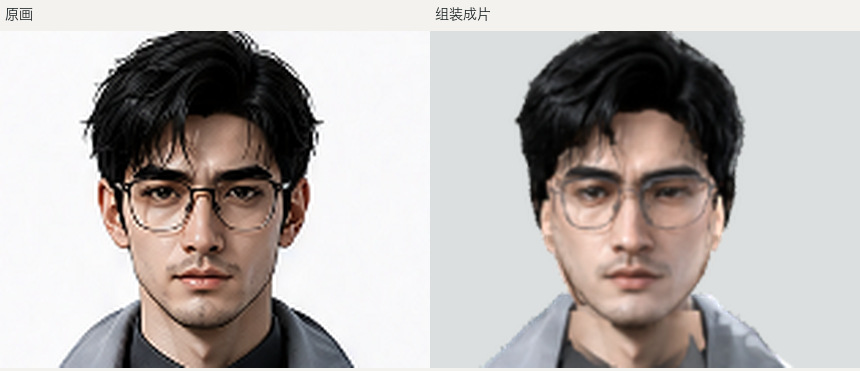
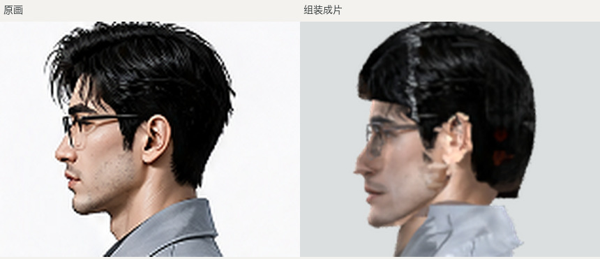
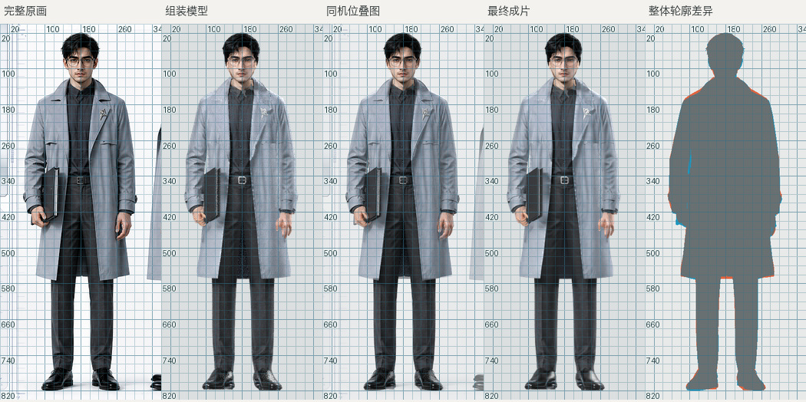
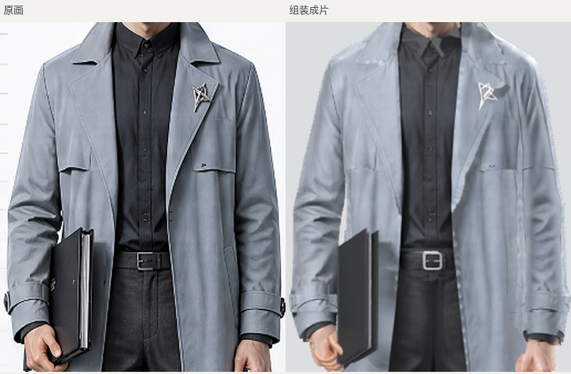
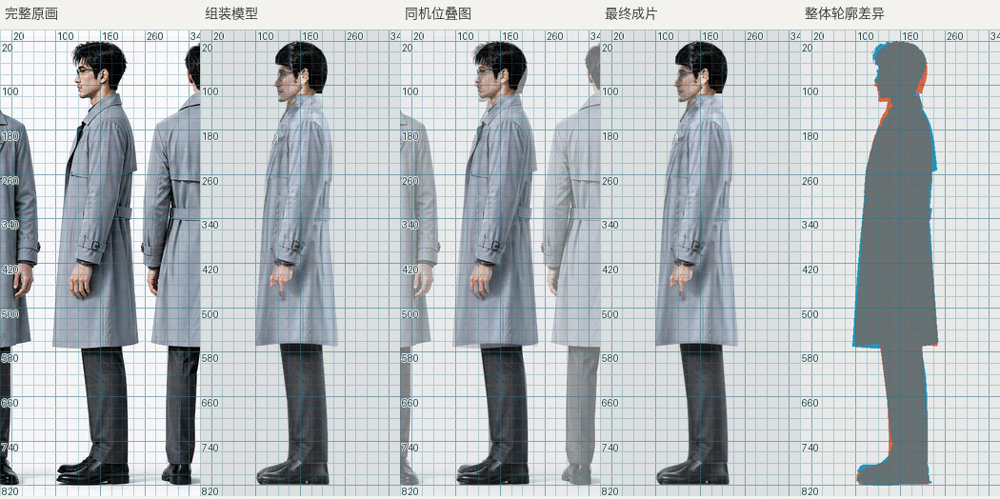
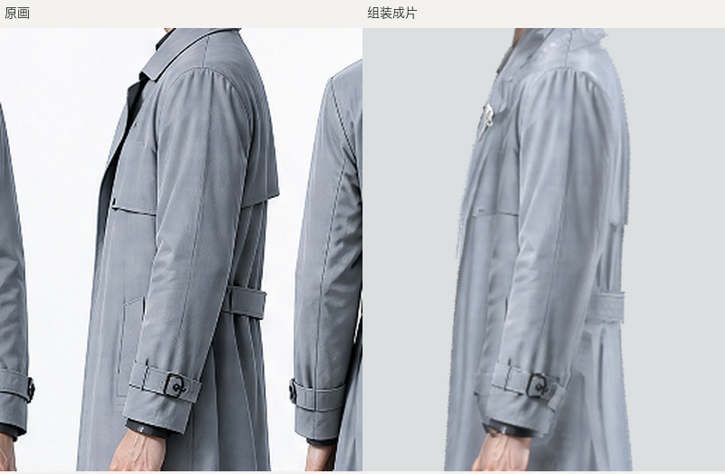
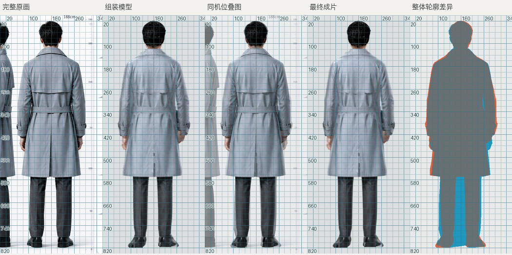
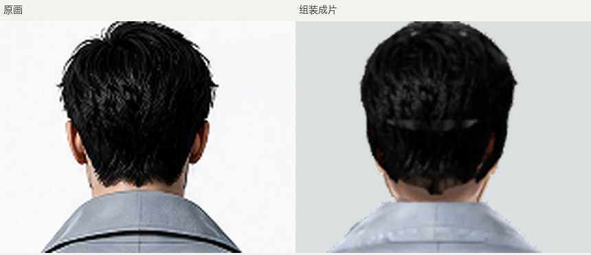
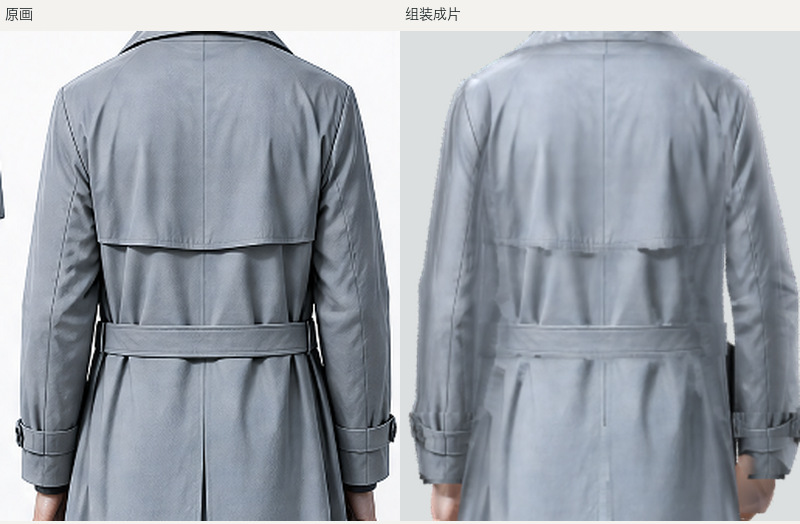

整体与逐件网格对照
蓝色为原画有而模型缺少的区域，橙色为模型多出的区域。灰色为重合，灰紫色为排除区。网格标注采用该栏原画的像素坐标，偏移为模型减原画，向右、向下为正。
逐段边界图中，白线连接模型边与原画目标，蓝圈标目标。红色表示搜索内缺边，紫色表示有多个候选，灰色表示画幅或遮挡证据不足。
完整测量记录
高精度对照 有部位需返修
本次覆盖 3/3 栏、3/3 件。已核对 0 项。
需返修 16 项 front 整体轮廓、front 可见发层、front 头脸与颈部、front 鞋履与鞋底、front 眉眼鼻唇、side 整体轮廓、side 可见发层、side 头脸与颈部、side 鞋履与鞋底、side 额鼻唇颏、back 整体轮廓、back 可见发层、back 头脸与颈部、back 鞋履与鞋底、back 后脑与领口、头脸与颈部多视图面部核对
待核对 3 项 front 建筑师的胸针与手持文件夹、side 建筑师的胸针与手持文件夹、back 建筑师的胸针与手持文件夹
头脸与颈部 · 面部多视图
侧向机位符合配置，绕头部上下轴的夹角 +90.0°，侧面仰俯 -0.0°
正面 需返修
原图裁框 158 × 124 px

同位置细网格 左外眼角 偏差最大，0.72 px，修向原画 (+0.7, +0.2) px侧面 需返修
原图裁框 158 × 124 px

同位置细网格 颏前 偏差最大，6.40 px，修向原画 (+4.0, -5.0) px仍需处理的局部
front

需返修 原尺寸叠图 整体逐段边界定位轮廓交并比 0.979，缺少 1384 px²，多出 1307 px²
包围框左、上、右、下偏移 -1 / +0 / -1 / -1 px
原画沿法线找模型 最大 15.12 px，P95 4.00 px，匹配 2927/3046，搜索内缺边 96，多解 23，画幅不足 0
模型沿法线找原画 最大 15.12 px，P95 3.80 px，匹配 2843/3086，搜索内缺边 186，多解 57，画幅不足 0
最大可定位偏差处，模型 (84.1, 447.5) 向原画位移 (-15.1, +0.0) px造型与神态 需返修
眉眼鼻唇 需返修 镜框和鼻梁清楚，皮肤明暗与原画仍有区别。对照标点 1 右外眼角 2 左外眼角 3 鼻尖 4 唇缝 5 颏点

建筑师的胸针与手持文件夹 待核对 分件
- 可见发层 需返修 整幅网格 · 局部网格 · 穿戴与遮挡 · 逐段边界定位
轮廓交并比 0.884，缺少 129 px²，多出 237 px²
包围框左、上、右、下偏移 +0 / +0 / -1 / +1 px
原画沿法线找模型 最大 17.30 px，P95 5.95 px，匹配 416/502，搜索内缺边 37，多解 49，画幅不足 0
模型沿法线找原画 最大 16.42 px，P95 5.25 px，匹配 383/446，搜索内缺边 13，多解 50，画幅不足 0
最大可定位偏差处，模型 (156.0, 65.3) 向原画位移 (+17.3, -0.8) px
- 头脸与颈部 需返修 整幅网格 · 局部网格 · 穿戴与遮挡 · 逐段边界定位
轮廓交并比 0.745，缺少 1004 px²，多出 222 px²
包围框左、上、右、下偏移 +5 / -2 / -6 / -16 px
原画沿法线找模型 最大 17.73 px，P95 16.33 px，匹配 262/396，搜索内缺边 50，多解 84，画幅不足 0
模型沿法线找原画 最大 17.73 px，P95 14.62 px，匹配 345/564，搜索内缺边 188，多解 31，画幅不足 0
最大可定位偏差处，模型 (198.2, 93.5) 向原画位移 (+17.7, +1.1) px
- 鞋履与鞋底 需返修 整幅网格 · 局部网格 · 穿戴与遮挡 · 逐段边界定位
轮廓交并比 0.799，缺少 869 px²，多出 245 px²
包围框左、上、右、下偏移 +0 / +3 / +1 / -1 px
原画沿法线找模型 最大 13.25 px，P95 9.33 px，匹配 492/550，搜索内缺边 58，多解 0，画幅不足 0
模型沿法线找原画 最大 12.42 px，P95 9.70 px，匹配 433/462，搜索内缺边 0，多解 29，画幅不足 0
最大可定位偏差处，模型 (132.2, 775.5) 向原画位移 (-13.2, +0.0) px
side

需返修 原尺寸叠图 整体逐段边界定位轮廓交并比 0.943，缺少 3334 px²，多出 1470 px²
包围框左、上、右、下偏移 +6 / -1 / -1 / -2 px
原画沿法线找模型 最大 17.52 px，P95 9.36 px，匹配 2276/2450，搜索内缺边 129，多解 45，画幅不足 0
模型沿法线找原画 最大 17.46 px，P95 8.00 px，匹配 2167/2300，搜索内缺边 55，多解 78，画幅不足 0
最大可定位偏差处，模型 (141.7, 565.7) 向原画位移 (-15.7, +7.8) px造型与神态 需返修
额鼻唇颏 需返修 额鼻转折和镜框清楚，唇颏位置略低。对照标点 1 鼻尖 2 唇缘 3 颏前

建筑师的胸针与手持文件夹 待核对 分件
- 可见发层 需返修 整幅网格 · 局部网格 · 穿戴与遮挡 · 逐段边界定位
轮廓交并比 0.827，缺少 410 px²，多出 524 px²
包围框左、上、右、下偏移 +6 / -1 / +0 / +4 px
原画沿法线找模型 最大 16.07 px，P95 11.90 px，匹配 488/576，搜索内缺边 72，多解 16，画幅不足 0
模型沿法线找原画 最大 17.94 px，P95 10.99 px，匹配 355/446，搜索内缺边 20，多解 71，画幅不足 0
最大可定位偏差处，模型 (211.5, 115.0) 向原画位移 (+1.8, -17.8) px
- 头脸与颈部 需返修 整幅网格 · 局部网格 · 穿戴与遮挡 · 逐段边界定位
轮廓交并比 0.745，缺少 406 px²，多出 470 px²
包围框左、上、右、下偏移 +0 / +0 / -1 / -7 px
原画沿法线找模型 最大 17.71 px，P95 13.45 px，匹配 330/456，搜索内缺边 54，多解 72，画幅不足 0
模型沿法线找原画 最大 17.55 px，P95 12.99 px，匹配 325/450，搜索内缺边 52，多解 73，画幅不足 0
最大可定位偏差处，模型 (142.4, 78.2) 向原画位移 (-7.9, +15.8) px
- 鞋履与鞋底 需返修 整幅网格 · 局部网格 · 穿戴与遮挡 · 逐段边界定位
轮廓交并比 0.865，缺少 658 px²，多出 80 px²
包围框左、上、右、下偏移 +1 / +1 / -4 / -2 px
原画沿法线找模型 最大 16.29 px，P95 7.28 px，匹配 376/398，搜索内缺边 22，多解 0，画幅不足 0
模型沿法线找原画 最大 9.15 px，P95 6.00 px，匹配 341/352，搜索内缺边 0，多解 11，画幅不足 0
最大可定位偏差处，模型 (104.5, 814.8) 向原画位移 (+4.0, -15.8) px
back

需返修 原尺寸叠图 整体逐段边界定位轮廓交并比 0.883，缺少 13251 px²，多出 3089 px²
包围框左、上、右、下偏移 -4 / -1 / +5 / +0 px
原画沿法线找模型 最大 17.88 px，P95 8.34 px，匹配 2298/2476，搜索内缺边 156，多解 22，画幅不足 0
模型沿法线找原画 最大 17.93 px，P95 8.08 px，匹配 2243/3094，搜索内缺边 780，多解 71，画幅不足 0
最大可定位偏差处，模型 (269.1, 464.5) 向原画位移 (+17.7, -2.8) px造型与神态 需返修

后脑与领口 需返修 后领、覆片与腰带的位置可辨，风衣摆的褶皱走向有差异。
建筑师的胸针与手持文件夹 待核对 分件
- 可见发层 需返修 整幅网格 · 局部网格 · 穿戴与遮挡 · 逐段边界定位
轮廓交并比 0.903，缺少 125 px²，多出 475 px²
包围框左、上、右、下偏移 +4 / -1 / +1 / +4 px
原画沿法线找模型 最大 17.75 px，P95 6.70 px，匹配 462/562，搜索内缺边 80，多解 20，画幅不足 0
模型沿法线找原画 最大 16.56 px，P95 4.52 px，匹配 310/382，搜索内缺边 1，多解 71，画幅不足 0
最大可定位偏差处，模型 (217.5, 85.8) 向原画位移 (+0.0, -17.8) px
- 头脸与颈部 需返修 整幅网格 · 局部网格 · 穿戴与遮挡 · 逐段边界定位
轮廓交并比 0.239，缺少 234 px²，多出 307 px²
包围框左、上、右、下偏移 +8 / +23 / -4 / +2 px
原画沿法线找模型 最大 17.45 px，P95 11.09 px，匹配 193/346，搜索内缺边 129，多解 24，画幅不足 0
模型沿法线找原画 最大 16.56 px，P95 6.67 px，匹配 183/226，搜索内缺边 25，多解 18，画幅不足 0
最大可定位偏差处，模型 (210.3, 103.9) 向原画位移 (+4.2, -16.9) px
- 鞋履与鞋底 需返修 整幅网格 · 局部网格 · 穿戴与遮挡 · 逐段边界定位
轮廓交并比 0.618，缺少 2125 px²，多出 400 px²
包围框左、上、右、下偏移 -5 / -6 / +3 / +0 px
原画沿法线找模型 最大 16.61 px，P95 8.24 px，匹配 362/470，搜索内缺边 107，多解 1，画幅不足 0
模型沿法线找原画 最大 15.61 px，P95 8.94 px，匹配 368/452，搜索内缺边 70，多解 14，画幅不足 0
最大可定位偏差处，模型 (93.9, 818.5) 向原画位移 (+16.1, -4.0) px